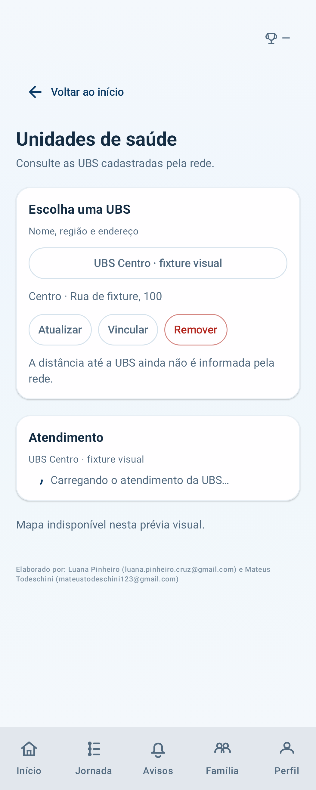
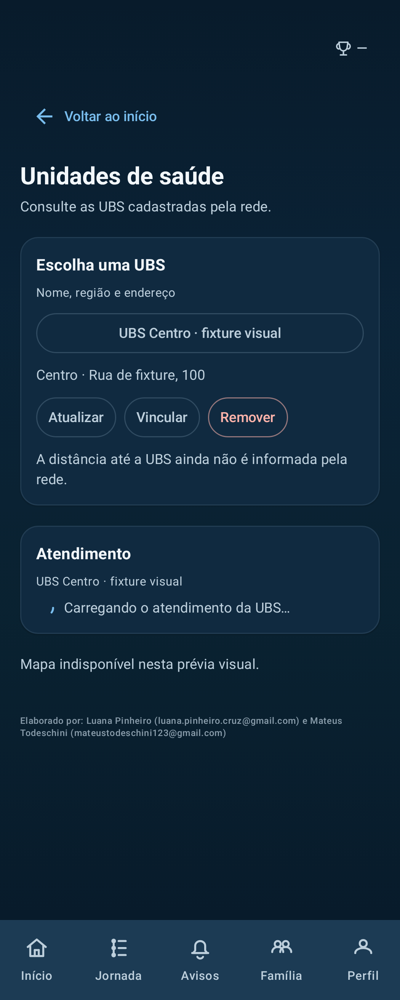
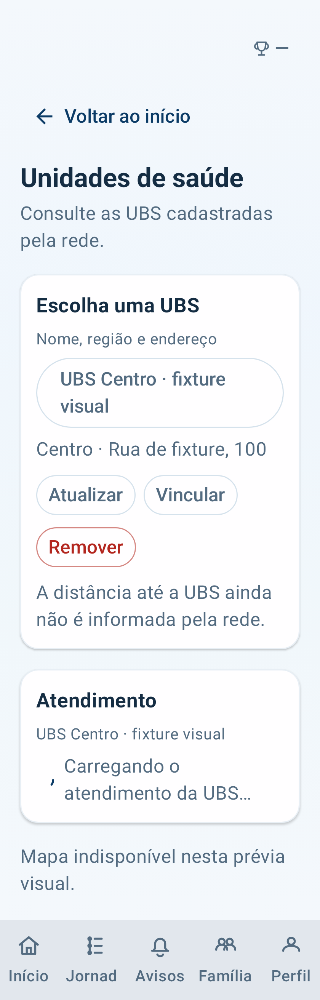
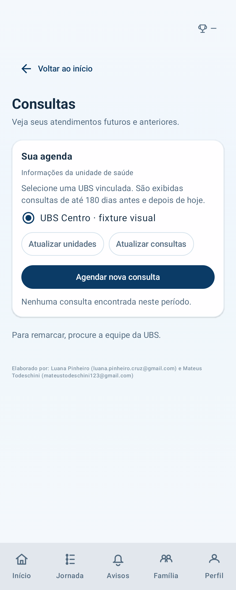
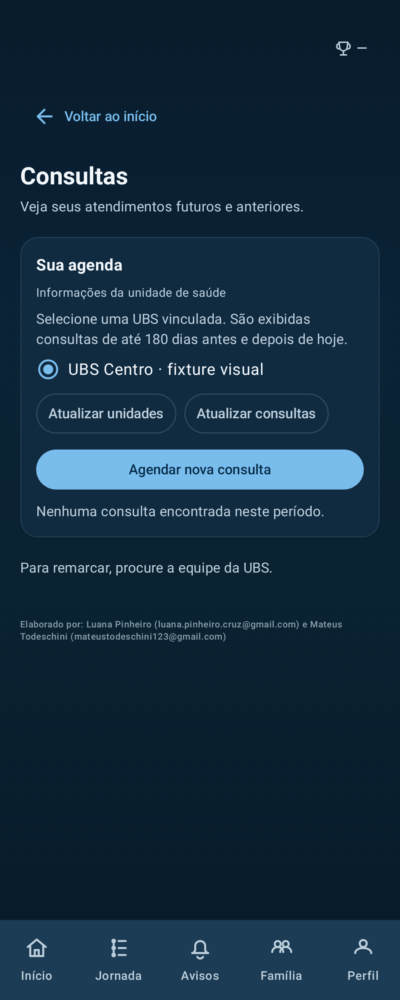
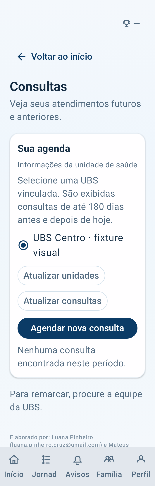

Botões — APPNORAUnitsLight botoes horizontais

UnitsDark botoes horizontais

UnitsLargeFont botoes horizontais

AppointmentsLight botoes horizontais

AppointmentsDark botoes horizontais

AppointmentsLargeFont botoes horizontais
